Code
from IPython.display import Image, display
from ipywidgets import widgets, HBoxUsing Quarto and GitHub Pages
from IPython.display import Image, display
from ipywidgets import widgets, HBoxHere I’m creating a repo called blog for all my blogging needs.
Image(filename='files/create_repo.png', width='400') 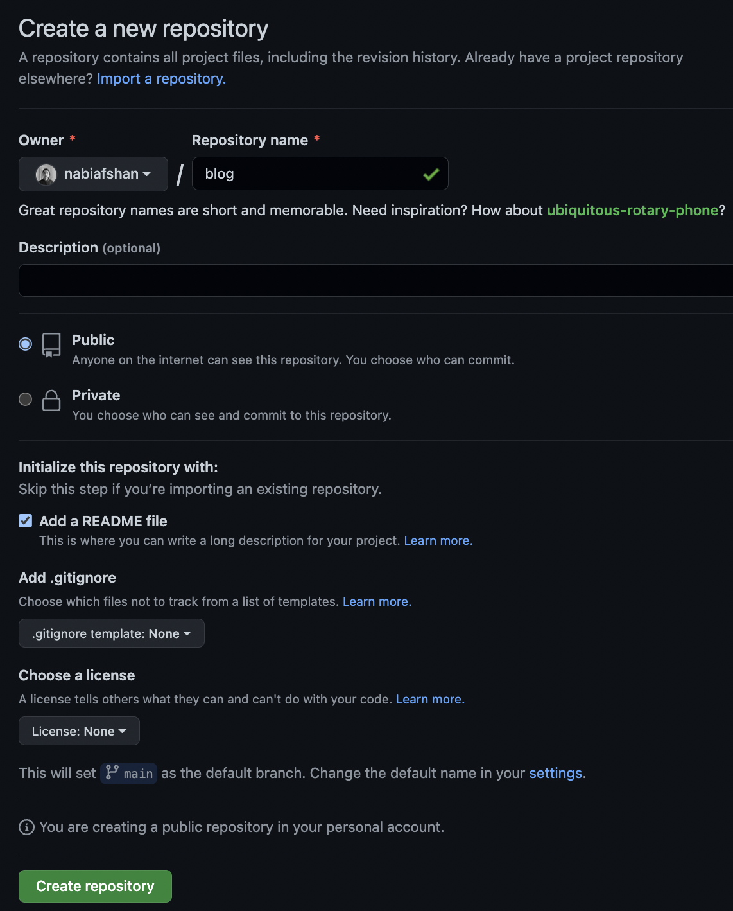
Download the repo to your local machine so you can add in files:
Image(filename='files/download_repo.png', width='600') 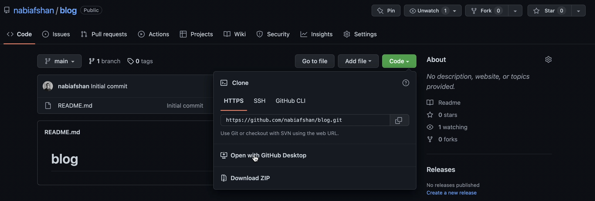
Choose the destination path (local path) where you want your repo:
Documents/GitHub/blogImage(filename='files/choose_dest.png', width='600') 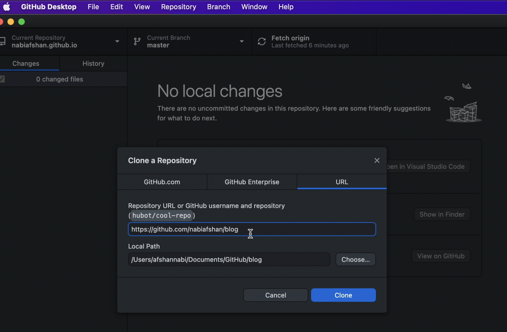
Head over to https://quarto.org/docs/websites/
I prefer setting things up using the terminal.
As the docs say, you need to do the follwing:
Documents/GitHubquarto create-project blog --type websitequarto preview blog to view the preview of the built in websitex = Image(filename='files/quarto_website.png', width='400')
y = Image(filename='files/create_files.png', width='400')
z = Image(filename='files/orig_preview.png', width='400')
display(x, ' ', y, '', z)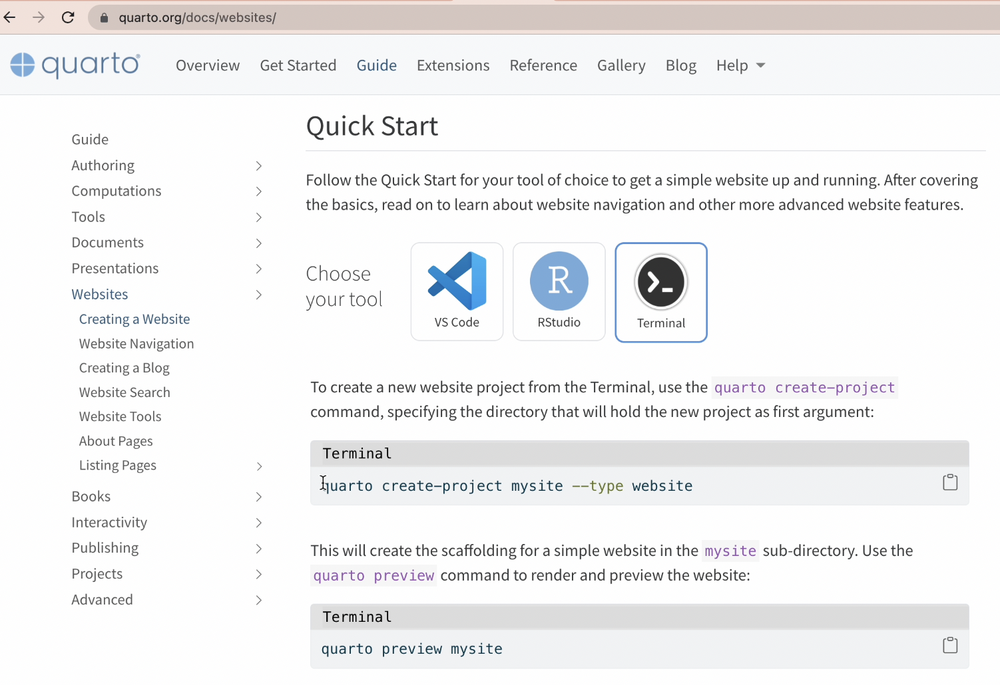
' '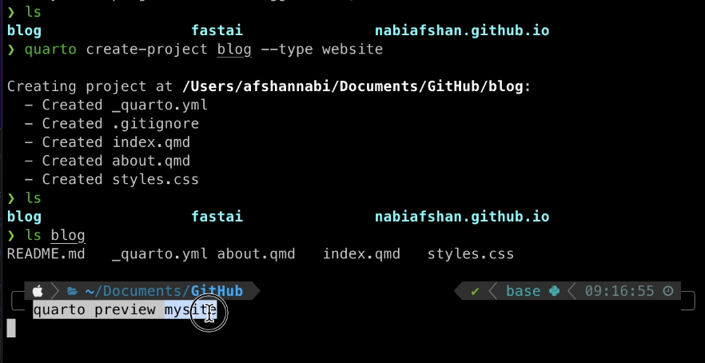
''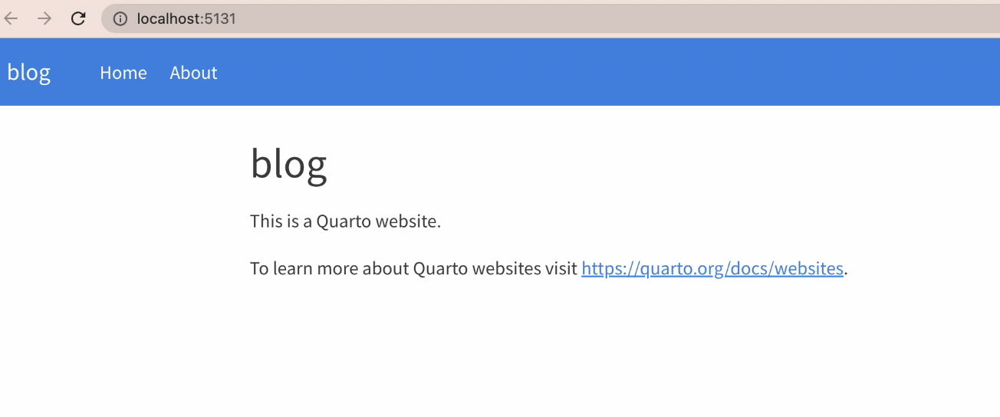
_quarto.ymlnavbar and add a sidebar instead.
sidebar, I create 2 sections: fastai and blog.
contents where I put in the relative paths of notebooks I want to display under those sections.lessons and myblogx = Image(filename='files/yml_file.png', width='400')
y = Image(filename='files/files.png', width='200')
display(x, ' ', y,)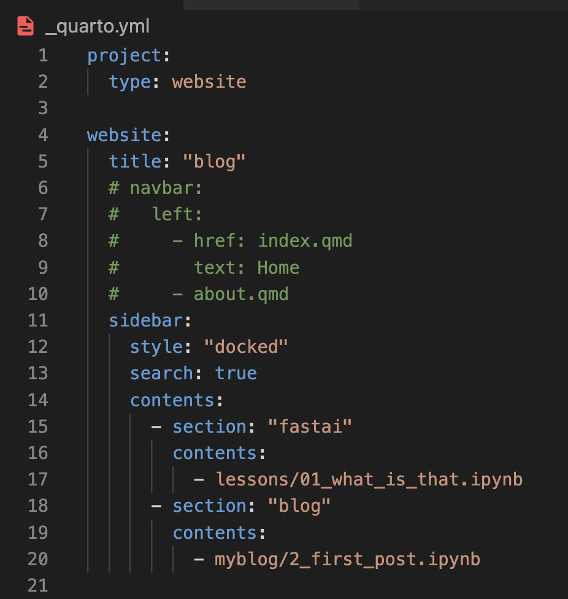
' '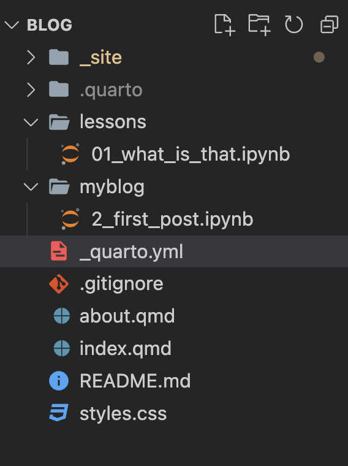
Using quarto preview blog in the terminal (as I did in the previous step, I can see what my website looks like:
fastai and blog
Image(filename='files/new preview.png', width='600') 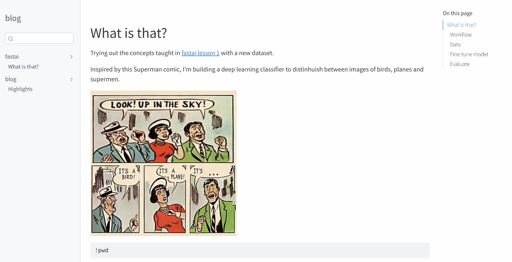
To complete this step, I used github pages, publish command from the quarto documentation.
gh-pagesI use github desktop to do git related things:
main branchgh-pages!ls -ltr filestotal 7530
-rw------- 1 root root 536600 Oct 22 08:10 create_repo.png
-rw------- 1 root root 934879 Oct 22 08:40 download_repo.png
-rw------- 1 root root 780780 Oct 22 08:43 choose_dest.png
-rw------- 1 root root 684226 Oct 22 08:48 quarto_website.png
-rw------- 1 root root 223923 Oct 22 08:54 create_files.png
-rw------- 1 root root 163439 Oct 22 10:12 orig_preview.png
-rw------- 1 root root 126830 Oct 22 10:18 yml_file.png
-rw------- 1 root root 66804 Oct 22 10:18 files.png
-rw------- 1 root root 1178521 Oct 22 10:32 'new preview.png'
-rw------- 1 root root 572315 Oct 22 10:41 'commit changes.png'
-rw------- 1 root root 498975 Oct 22 10:42 create_branch.png
-rw------- 1 root root 534631 Oct 22 10:43 publish_branch.png
-rw------- 1 root root 572489 Oct 22 10:44 check_settings.png
-rw------- 1 root root 295161 Oct 22 10:45 gitignore.png
-rw------- 1 root root 158490 Oct 22 10:46 publish.png
-rw------- 1 root root 377923 Oct 22 10:47 final_view.pngx = Image(filename='files/create_branch.png', height='400')
y = Image(filename='files/publish_branch.png', height='400')
display(x, ' ', y,)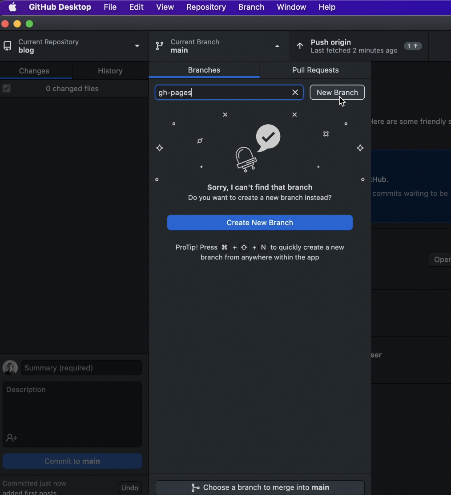
' '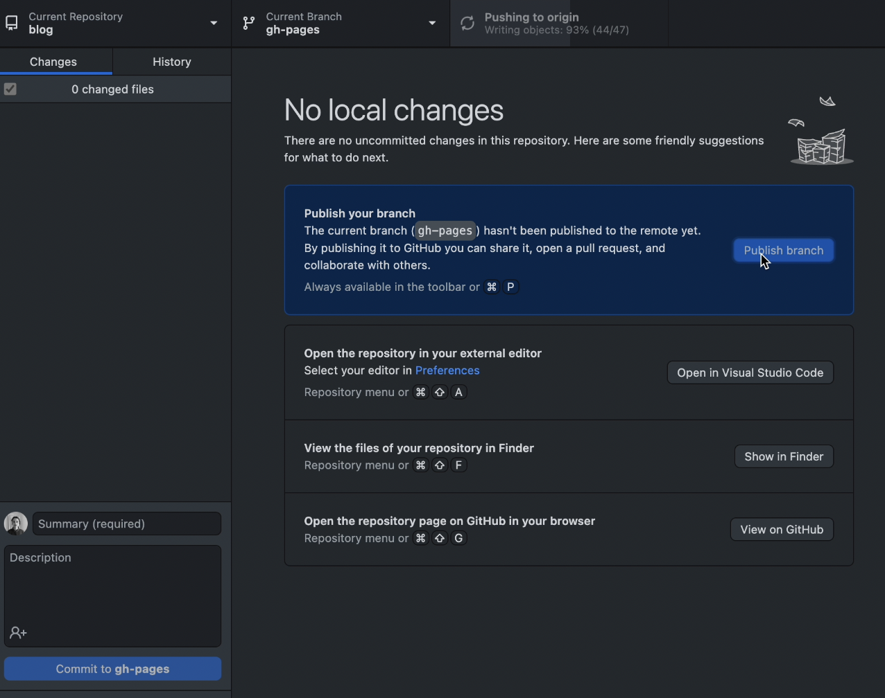
Image(filename='files/check_settings.png', height='400') 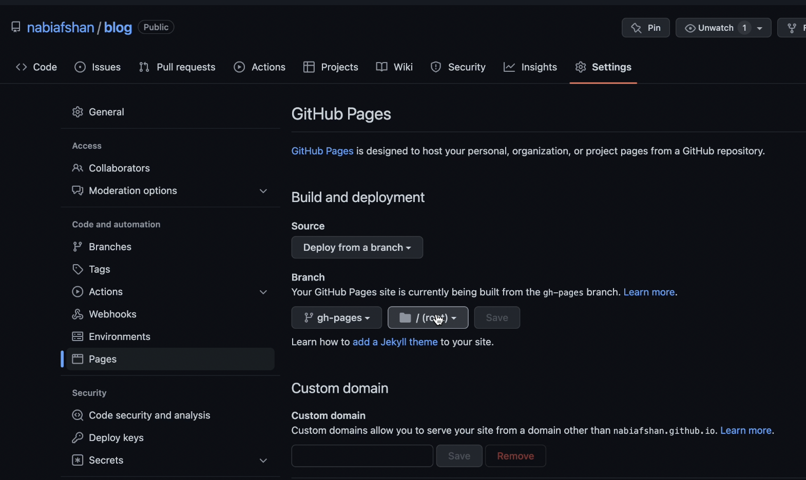
.gitignoreImage(filename='files/gitignore.png', height='400') 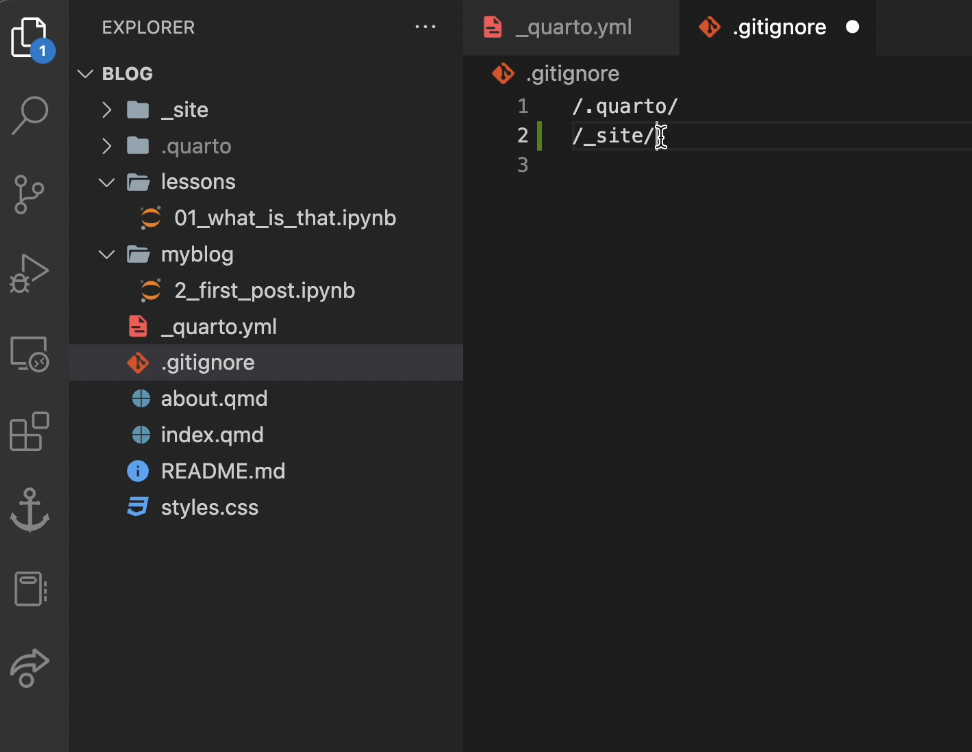
main branch, push all changes to remoteImage(filename='files/commit_changes2.png', height='400') 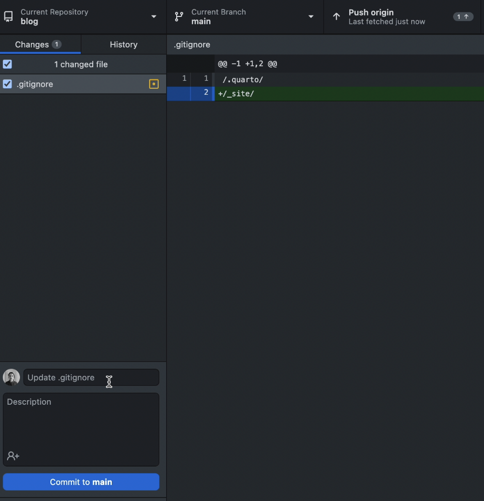
main branch)!Image(filename='files/publish.png', height='200') 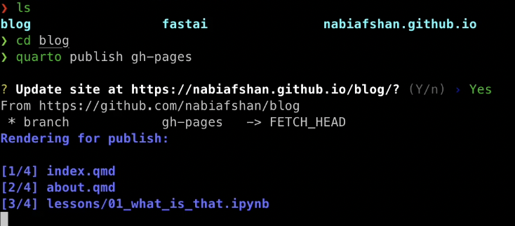
The final site looks like this:
Image(filename='files/final_view.png', height='300') 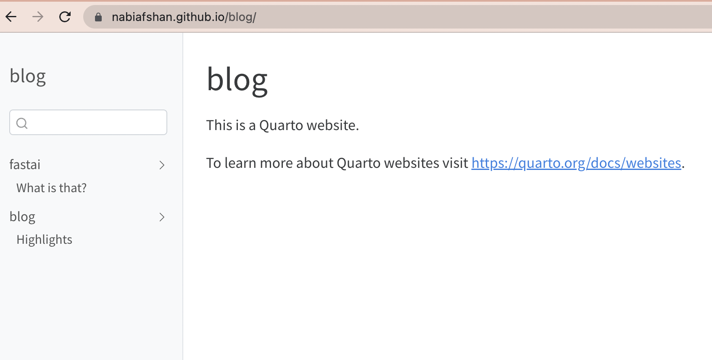